Three-speaker separation: Librivox, 4 mics
Example 1
| Mixture |

|
||
|---|---|---|---|
| Ground-truth sources |

SI-SDR = -12.23 dB |

SI-SDR = -6.53 dB |

SI-SDR = 5.25 dB |
| Method | Separated source 0 | Separated source 1 | Separated source 2 |
| TI 64ms x 4 frames, BF2 |
SI-SDR = 9.13 dB |
SI-SDR = 11.78 dB |
SI-SDR = 18.61 dB |
| TI 64ms x 4 frames, MN3 |
SI-SDR = 9.37 dB |
SI-SDR = 9.67 dB |
SI-SDR = 16.68 dB |
| TI 64ms x 4 frames, block size 3.2s, BF2 |
SI-SDR = 4.58 dB |
SI-SDR = 7.42 dB |
SI-SDR = 16.27 dB |
| TI 64ms x 4 frames, block size 3.2s, MN3 |
SI-SDR = 6.37 dB |
SI-SDR = 7.49 dB |
SI-SDR = 15.41 dB |
| TV 128ms x 2 frames, BF2 |

SI-SDR = 0.58 dB |
SI-SDR = 5.29 dB |
SI-SDR = 15.92 dB |
| TV 128ms x 2 frames, MN3 |
SI-SDR = 4.44 dB |
SI-SDR = 6.23 dB |
SI-SDR = 14.91 dB |
Example 2
| Mixture |

|
||
|---|---|---|---|
| Ground-truth sources |

SI-SDR = -7.81 dB |

SI-SDR = 6.32 dB |

SI-SDR = -14.29 dB |
| Method | Separated source 0 | Separated source 1 | Separated source 2 |
| TI 64ms x 4 frames, BF2 |
SI-SDR = 12.98 dB |
SI-SDR = 19.92 dB |
SI-SDR = 9.63 dB |
| TI 64ms x 4 frames, MN3 |
SI-SDR = 10.62 dB |
SI-SDR = 18.12 dB |
SI-SDR = 10.17 dB |
| TI 64ms x 4 frames, block size 3.2s, BF2 |
SI-SDR = 10.51 dB |
SI-SDR = 18.19 dB |
SI-SDR = 7.28 dB |
| TI 64ms x 4 frames, block size 3.2s, MN3 |
SI-SDR = 9.52 dB |
SI-SDR = 17.34 dB |
SI-SDR = 8.03 dB |
| TV 128ms x 2 frames, BF2 |
SI-SDR = 11.28 dB |
SI-SDR = 18.90 dB |
SI-SDR = 7.24 dB |
| TV 128ms x 2 frames, MN3 |
SI-SDR = 9.53 dB |
SI-SDR = 17.26 dB |
SI-SDR = 8.02 dB |
Example 3
| Mixture |

|
||
|---|---|---|---|
| Ground-truth sources |

SI-SDR = -20.87 dB |

SI-SDR = -17.78 dB |

SI-SDR = 16.60 dB |
| Method | Separated source 0 | Separated source 1 | Separated source 2 |
| TI 64ms x 4 frames, BF2 |
SI-SDR = 5.79 dB |

SI-SDR = 5.25 dB |
SI-SDR = 23.32 dB |
| TI 64ms x 4 frames, MN3 |
SI-SDR = 5.97 dB |
SI-SDR = 5.82 dB |

SI-SDR = 23.81 dB |
| TI 64ms x 4 frames, block size 3.2s, BF2 |
SI-SDR = 3.93 dB |
SI-SDR = 6.68 dB |
SI-SDR = 23.55 dB |
| TI 64ms x 4 frames, block size 3.2s, MN3 |
SI-SDR = 4.40 dB |
SI-SDR = 5.68 dB |

SI-SDR = 23.31 dB |
| TV 128ms x 2 frames, BF2 |
SI-SDR = 4.63 dB |
SI-SDR = 5.35 dB |
SI-SDR = 23.25 dB |
| TV 128ms x 2 frames, MN3 |
SI-SDR = 3.85 dB |
SI-SDR = 5.54 dB |
SI-SDR = 23.07 dB |
Example 4
| Mixture |

|
||
|---|---|---|---|
| Ground-truth sources |

SI-SDR = -29.41 dB |

SI-SDR = -29.96 dB |

SI-SDR = 25.31 dB |
| Method | Separated source 0 | Separated source 1 | Separated source 2 |
| TI 64ms x 4 frames, BF2 |
SI-SDR = -0.69 dB |
SI-SDR = -3.62 dB |
SI-SDR = 29.14 dB |
| TI 64ms x 4 frames, MN3 |
SI-SDR = 0.49 dB |
SI-SDR = -1.15 dB |
SI-SDR = 30.04 dB |
| TI 64ms x 4 frames, block size 3.2s, BF2 |
SI-SDR = -0.62 dB |
SI-SDR = -10.92 dB |
SI-SDR = 29.56 dB |
| TI 64ms x 4 frames, block size 3.2s, MN3 |
SI-SDR = -0.73 dB |
SI-SDR = -17.61 dB |
SI-SDR = 29.80 dB |
| TV 128ms x 2 frames, BF2 |
SI-SDR = -0.63 dB |
SI-SDR = -16.24 dB |
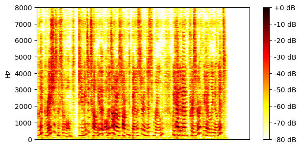
SI-SDR = 29.87 dB |
| TV 128ms x 2 frames, MN3 |
SI-SDR = -0.80 dB |

SI-SDR = -12.97 dB |
SI-SDR = 29.49 dB |
Example 5
| Mixture |

|
||
|---|---|---|---|
| Ground-truth sources |

SI-SDR = -10.68 dB |

SI-SDR = 4.10 dB |

SI-SDR = -6.04 dB |
| Method | Separated source 0 | Separated source 1 | Separated source 2 |
| TI 64ms x 4 frames, BF2 |
SI-SDR = 3.04 dB |
SI-SDR = 12.34 dB |
SI-SDR = 8.15 dB |
| TI 64ms x 4 frames, MN3 |
SI-SDR = 5.00 dB |
SI-SDR = 13.88 dB |
SI-SDR = 9.97 dB |
| TI 64ms x 4 frames, block size 3.2s, BF2 |
SI-SDR = 2.21 dB |
SI-SDR = 12.25 dB |
SI-SDR = 8.47 dB |
| TI 64ms x 4 frames, block size 3.2s, MN3 |
SI-SDR = 2.97 dB |
SI-SDR = 12.91 dB |
SI-SDR = 8.66 dB |
| TV 128ms x 2 frames, BF2 |
SI-SDR = 2.29 dB |
SI-SDR = 12.58 dB |
SI-SDR = 8.65 dB |
| TV 128ms x 2 frames, MN3 |
SI-SDR = 2.61 dB |
SI-SDR = 12.49 dB |
SI-SDR = 8.16 dB |
Example 6
| Mixture |

|
||
|---|---|---|---|
| Ground-truth sources |

SI-SDR = 14.06 dB |
SI-SDR = -19.82 dB |
SI-SDR = -15.07 dB |
| Method | Separated source 0 | Separated source 1 | Separated source 2 |
| TI 64ms x 4 frames, BF2 |
SI-SDR = 23.93 dB |
SI-SDR = 5.56 dB |
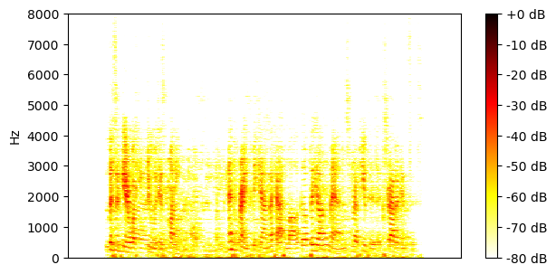
SI-SDR = 8.49 dB |
| TI 64ms x 4 frames, MN3 |
SI-SDR = 24.41 dB |
SI-SDR = 7.55 dB |
SI-SDR = 8.85 dB |
| TI 64ms x 4 frames, block size 3.2s, BF2 |
SI-SDR = 22.96 dB |
SI-SDR = 5.90 dB |
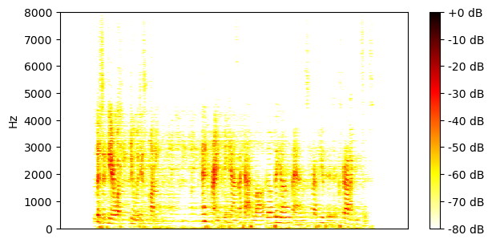
SI-SDR = 6.90 dB |
| TI 64ms x 4 frames, block size 3.2s, MN3 |
SI-SDR = 23.11 dB |
SI-SDR = 6.87 dB |
SI-SDR = 7.35 dB |
| TV 128ms x 2 frames, BF2 |
SI-SDR = 22.03 dB |
SI-SDR = -1.69 dB |
SI-SDR = -1.13 dB |
| TV 128ms x 2 frames, MN3 |
SI-SDR = 21.73 dB |
SI-SDR = 4.28 dB |
SI-SDR = 4.74 dB |
Example 7
| Mixture |
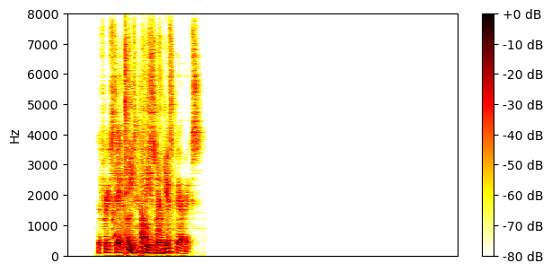
|
||
|---|---|---|---|
| Ground-truth sources |
SI-SDR = -0.40 dB |

SI-SDR = -20.58 dB |
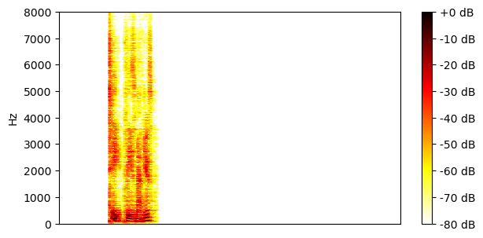
SI-SDR = 0.30 dB |
| Method | Separated source 0 | Separated source 1 | Separated source 2 |
| TI 64ms x 4 frames, BF2 |
SI-SDR = 8.01 dB |
SI-SDR = -11.93 dB |
SI-SDR = 13.86 dB |
| TI 64ms x 4 frames, MN3 |
SI-SDR = 12.71 dB |
SI-SDR = -2.86 dB |
SI-SDR = 14.26 dB |
| TI 64ms x 4 frames, block size 3.2s, BF2 |
SI-SDR = 9.53 dB |
SI-SDR = -4.05 dB |
SI-SDR = 10.18 dB |
| TI 64ms x 4 frames, block size 3.2s, MN3 |
SI-SDR = 11.86 dB |
SI-SDR = -3.00 dB |
SI-SDR = 13.25 dB |
| TV 128ms x 2 frames, BF2 |
SI-SDR = 9.01 dB |
SI-SDR = -4.26 dB |
SI-SDR = 10.28 dB |
| TV 128ms x 2 frames, MN3 |
SI-SDR = 10.70 dB |
SI-SDR = -3.29 dB |
SI-SDR = 11.90 dB |
Example 8
| Mixture |

|
||
|---|---|---|---|
| Ground-truth sources |

SI-SDR = 9.37 dB |

SI-SDR = -10.67 dB |
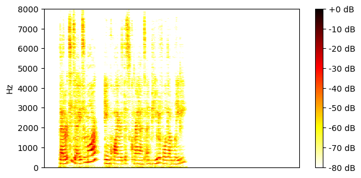
SI-SDR = -15.87 dB |
| Method | Separated source 0 | Separated source 1 | Separated source 2 |
| TI 64ms x 4 frames, BF2 |
SI-SDR = 18.92 dB |
SI-SDR = 9.10 dB |
SI-SDR = 7.01 dB |
| TI 64ms x 4 frames, MN3 |
SI-SDR = 18.14 dB |
SI-SDR = 7.16 dB |
SI-SDR = 8.43 dB |
| TI 64ms x 4 frames, block size 3.2s, BF2 |

SI-SDR = 17.06 dB |
SI-SDR = 6.24 dB |

SI-SDR = 6.66 dB |
| TI 64ms x 4 frames, block size 3.2s, MN3 |
SI-SDR = 16.71 dB |
SI-SDR = 5.49 dB |
SI-SDR = 6.99 dB |
| TV 128ms x 2 frames, BF2 |

SI-SDR = 17.34 dB |
SI-SDR = 6.45 dB |
SI-SDR = 6.53 dB |
| TV 128ms x 2 frames, MN3 |

SI-SDR = 16.47 dB |

SI-SDR = 5.30 dB |
SI-SDR = 6.33 dB |
Example 9
| Mixture |

|
||
|---|---|---|---|
| Ground-truth sources |

SI-SDR = 4.66 dB |
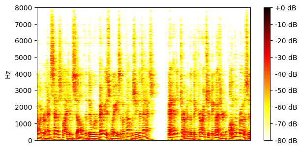
SI-SDR = -6.17 dB |

SI-SDR = -11.78 dB |
| Method | Separated source 0 | Separated source 1 | Separated source 2 |
| TI 64ms x 4 frames, BF2 |
SI-SDR = 16.70 dB |
SI-SDR = 9.94 dB |
SI-SDR = 5.76 dB |
| TI 64ms x 4 frames, MN3 |
SI-SDR = 16.95 dB |
SI-SDR = 9.97 dB |
SI-SDR = 6.70 dB |
| TI 64ms x 4 frames, block size 3.2s, BF2 |
SI-SDR = 16.03 dB |
SI-SDR = 3.39 dB |
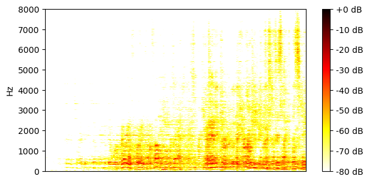
SI-SDR = -8.03 dB |
| TI 64ms x 4 frames, block size 3.2s, MN3 |
SI-SDR = 15.87 dB |
SI-SDR = 5.25 dB |
SI-SDR = -2.18 dB |
| TV 128ms x 2 frames, BF2 |
SI-SDR = 16.18 dB |
SI-SDR = 7.42 dB |

SI-SDR = 3.04 dB |
| TV 128ms x 2 frames, MN3 |
SI-SDR = 15.78 dB |
SI-SDR = 8.51 dB |
SI-SDR = 5.11 dB |
Example 10
| Mixture |

|
||
|---|---|---|---|
| Ground-truth sources |

SI-SDR = -22.38 dB |
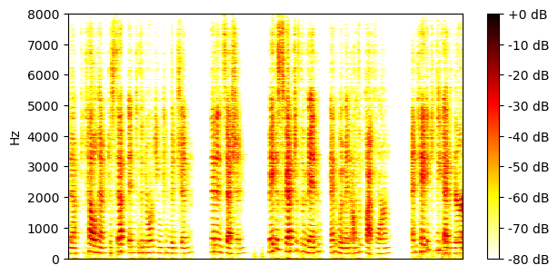
SI-SDR = -7.29 dB |

SI-SDR = 7.16 dB |
| Method | Separated source 0 | Separated source 1 | Separated source 2 |
| TI 64ms x 4 frames, BF2 |
SI-SDR = 3.91 dB |
SI-SDR = 15.14 dB |
SI-SDR = 21.86 dB |
| TI 64ms x 4 frames, MN3 |
SI-SDR = 4.24 dB |
SI-SDR = 13.51 dB |
SI-SDR = 20.72 dB |
| TI 64ms x 4 frames, block size 3.2s, BF2 |
SI-SDR = 0.22 dB |
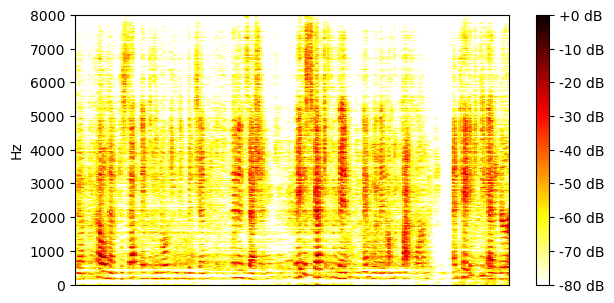
SI-SDR = 12.60 dB |
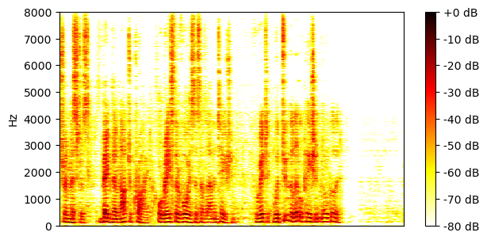
SI-SDR = 19.87 dB |
| TI 64ms x 4 frames, block size 3.2s, MN3 |
SI-SDR = 0.81 dB |
SI-SDR = 12.04 dB |
SI-SDR = 19.73 dB |
| TV 128ms x 2 frames, BF2 |
SI-SDR = 3.06 dB |
SI-SDR = 13.60 dB |

SI-SDR = 20.33 dB |
| TV 128ms x 2 frames, MN3 |
SI-SDR = 1.58 dB |
SI-SDR = 12.31 dB |
SI-SDR = 19.66 dB |
Example 11
| Mixture |

|
||
|---|---|---|---|
| Ground-truth sources |

SI-SDR = -21.30 dB |

SI-SDR = -16.77 dB |

SI-SDR = 15.54 dB |
| Method | Separated source 0 | Separated source 1 | Separated source 2 |
| TI 64ms x 4 frames, BF2 |
SI-SDR = 6.61 dB |
SI-SDR = 7.92 dB |
SI-SDR = 24.31 dB |
| TI 64ms x 4 frames, MN3 |
SI-SDR = 7.91 dB |
SI-SDR = 9.62 dB |
SI-SDR = 25.30 dB |
| TI 64ms x 4 frames, block size 3.2s, BF2 |
SI-SDR = 6.15 dB |
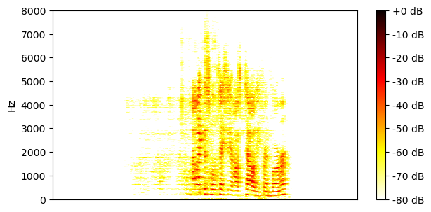
SI-SDR = 6.83 dB |
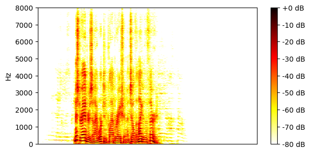
SI-SDR = 23.15 dB |
| TI 64ms x 4 frames, block size 3.2s, MN3 |
SI-SDR = 6.22 dB |

SI-SDR = 8.79 dB |
SI-SDR = 24.43 dB |
| TV 128ms x 2 frames, BF2 |
SI-SDR = 5.62 dB |
SI-SDR = 5.76 dB |

SI-SDR = 22.47 dB |
| TV 128ms x 2 frames, MN3 |
SI-SDR = 5.46 dB |
SI-SDR = 9.35 dB |
SI-SDR = 24.56 dB |
Example 12
| Mixture |
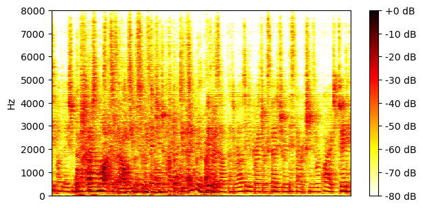
|
||
|---|---|---|---|
| Ground-truth sources |
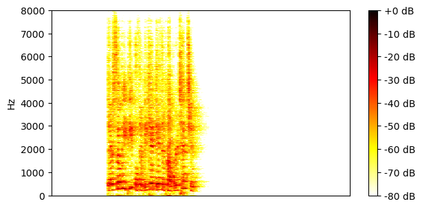
SI-SDR = -13.66 dB |

SI-SDR = -0.73 dB |

SI-SDR = -0.04 dB |
| Method | Separated source 0 | Separated source 1 | Separated source 2 |
| TI 64ms x 4 frames, BF2 |
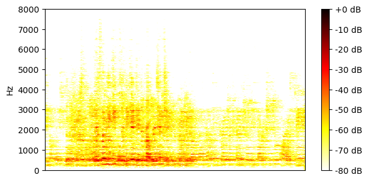
SI-SDR = 0.79 dB |
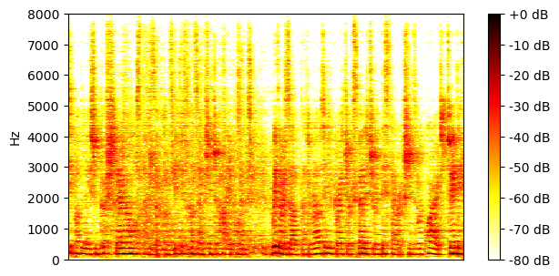
SI-SDR = 13.16 dB |
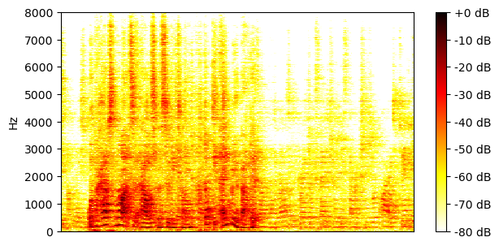
SI-SDR = 12.72 dB |
| TI 64ms x 4 frames, MN3 |
SI-SDR = 4.60 dB |
SI-SDR = 13.36 dB |
SI-SDR = 13.12 dB |
| TI 64ms x 4 frames, block size 3.2s, BF2 |
SI-SDR = -1.07 dB |
SI-SDR = 10.70 dB |
SI-SDR = 10.74 dB |
| TI 64ms x 4 frames, block size 3.2s, MN3 |
SI-SDR = 0.99 dB |
SI-SDR = 11.15 dB |
SI-SDR = 11.35 dB |
| TV 128ms x 2 frames, BF2 |
SI-SDR = -1.97 dB |
SI-SDR = 11.00 dB |

SI-SDR = 10.95 dB |
| TV 128ms x 2 frames, MN3 |
SI-SDR = 0.99 dB |
SI-SDR = 10.83 dB |
SI-SDR = 11.00 dB |
Example 13
| Mixture |
|
||
|---|---|---|---|
| Ground-truth sources |
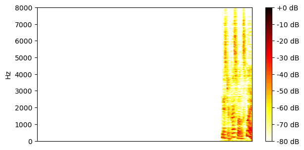
SI-SDR = -17.54 dB |
SI-SDR = 7.73 dB |
SI-SDR = -8.41 dB |
| Method | Separated source 0 | Separated source 1 | Separated source 2 |
| TI 64ms x 4 frames, BF2 |
SI-SDR = 6.98 dB |

SI-SDR = 22.36 dB |
SI-SDR = 13.95 dB |
| TI 64ms x 4 frames, MN3 |
SI-SDR = 12.84 dB |
SI-SDR = 24.88 dB |

SI-SDR = 15.23 dB |
| TI 64ms x 4 frames, block size 3.2s, BF2 |
SI-SDR = 12.83 dB |
SI-SDR = 24.35 dB |
SI-SDR = 14.58 dB |
| TI 64ms x 4 frames, block size 3.2s, MN3 |
SI-SDR = 11.98 dB |
SI-SDR = 24.22 dB |
SI-SDR = 14.56 dB |
| TV 128ms x 2 frames, BF2 |
SI-SDR = 13.80 dB |
SI-SDR = 25.52 dB |
SI-SDR = 15.69 dB |
| TV 128ms x 2 frames, MN3 |
SI-SDR = 12.09 dB |
SI-SDR = 24.25 dB |
SI-SDR = 14.60 dB |
Example 14
| Mixture |

|
||
|---|---|---|---|
| Ground-truth sources |

SI-SDR = -4.40 dB |

SI-SDR = 4.35 dB |

SI-SDR = -19.97 dB |
| Method | Separated source 0 | Separated source 1 | Separated source 2 |
| TI 64ms x 4 frames, BF2 |
SI-SDR = 3.49 dB |
SI-SDR = 9.39 dB |
SI-SDR = 8.39 dB |
| TI 64ms x 4 frames, MN3 |
SI-SDR = 4.34 dB |
SI-SDR = 10.12 dB |
SI-SDR = 19.61 dB |
| TI 64ms x 4 frames, block size 3.2s, BF2 |
SI-SDR = 6.41 dB |
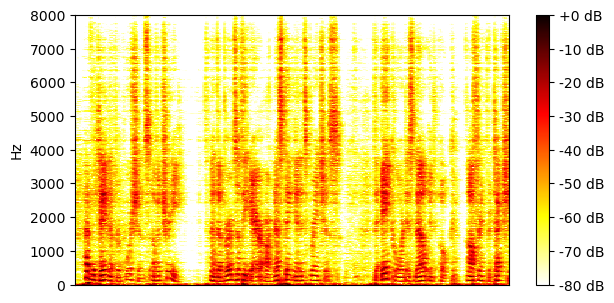
SI-SDR = 11.54 dB |
SI-SDR = 18.68 dB |
| TI 64ms x 4 frames, block size 3.2s, MN3 |
SI-SDR = 6.51 dB |
SI-SDR = 11.40 dB |
SI-SDR = 16.92 dB |
| TV 128ms x 2 frames, BF2 |
SI-SDR = 11.06 dB |
SI-SDR = 15.49 dB |
SI-SDR = 20.92 dB |
| TV 128ms x 2 frames, MN3 |
SI-SDR = 11.26 dB |
SI-SDR = 15.83 dB |
SI-SDR = 20.08 dB |
Example 15
| Mixture |
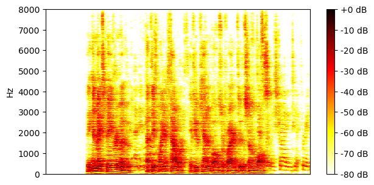
|
||
|---|---|---|---|
| Ground-truth sources |

SI-SDR = -20.16 dB |

SI-SDR = 11.94 dB |

SI-SDR = -12.88 dB |
| Method | Separated source 0 | Separated source 1 | Separated source 2 |
| TI 64ms x 4 frames, BF2 |
SI-SDR = -0.49 dB |
SI-SDR = 16.98 dB |
SI-SDR = 4.47 dB |
| TI 64ms x 4 frames, MN3 |
SI-SDR = 1.53 dB |
SI-SDR = 17.40 dB |
SI-SDR = 3.93 dB |
| TI 64ms x 4 frames, block size 3.2s, BF2 |
SI-SDR = 0.34 dB |
SI-SDR = 15.84 dB |
SI-SDR = 1.81 dB |
| TI 64ms x 4 frames, block size 3.2s, MN3 |
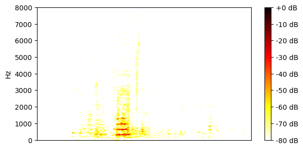
SI-SDR = 0.41 dB |

SI-SDR = 16.45 dB |
SI-SDR = 2.42 dB |
| TV 128ms x 2 frames, BF2 |
SI-SDR = -0.14 dB |
SI-SDR = 15.40 dB |
SI-SDR = 0.25 dB |
| TV 128ms x 2 frames, MN3 |
SI-SDR = 0.42 dB |
SI-SDR = 15.45 dB |
SI-SDR = 0.91 dB |
Example 16
| Mixture |

|
||
|---|---|---|---|
| Ground-truth sources |
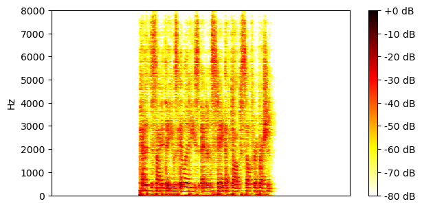
SI-SDR = 4.64 dB |

SI-SDR = -6.00 dB |
SI-SDR = -12.91 dB |
| Method | Separated source 0 | Separated source 1 | Separated source 2 |
| TI 64ms x 4 frames, BF2 |
SI-SDR = 13.94 dB |
SI-SDR = 11.12 dB |
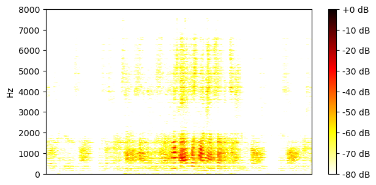
SI-SDR = 1.47 dB |
| TI 64ms x 4 frames, MN3 |
SI-SDR = 14.41 dB |
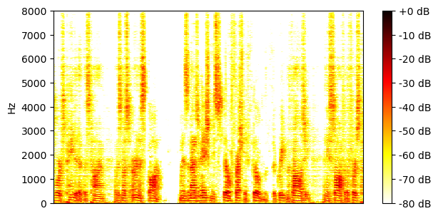
SI-SDR = 10.26 dB |
SI-SDR = 3.71 dB |
| TI 64ms x 4 frames, block size 3.2s, BF2 |
SI-SDR = 14.19 dB |
SI-SDR = 9.66 dB |
SI-SDR = 3.01 dB |
| TI 64ms x 4 frames, block size 3.2s, MN3 |
SI-SDR = 14.12 dB |
SI-SDR = 9.35 dB |

SI-SDR = 3.44 dB |
| TV 128ms x 2 frames, BF2 |
SI-SDR = 13.29 dB |
SI-SDR = 9.27 dB |
SI-SDR = 1.00 dB |
| TV 128ms x 2 frames, MN3 |
SI-SDR = 13.60 dB |
SI-SDR = 8.84 dB |
SI-SDR = 2.88 dB |
Example 17
| Mixture |

|
||
|---|---|---|---|
| Ground-truth sources |

SI-SDR = -23.30 dB |

SI-SDR = 14.56 dB |

SI-SDR = -15.04 dB |
| Method | Separated source 0 | Separated source 1 | Separated source 2 |
| TI 64ms x 4 frames, BF2 |
SI-SDR = -9.25 dB |
SI-SDR = 22.41 dB |
SI-SDR = 11.35 dB |
| TI 64ms x 4 frames, MN3 |
SI-SDR = -29.09 dB |
SI-SDR = 22.35 dB |
SI-SDR = 12.73 dB |
| TI 64ms x 4 frames, block size 3.2s, BF2 |
SI-SDR = -8.82 dB |
SI-SDR = 22.36 dB |
SI-SDR = 10.78 dB |
| TI 64ms x 4 frames, block size 3.2s, MN3 |
SI-SDR = -5.08 dB |
SI-SDR = 22.89 dB |
SI-SDR = 11.76 dB |
| TV 128ms x 2 frames, BF2 |
SI-SDR = -6.71 dB |
SI-SDR = 22.47 dB |
SI-SDR = 9.04 dB |
| TV 128ms x 2 frames, MN3 |
SI-SDR = -3.02 dB |
SI-SDR = 22.84 dB |
SI-SDR = 10.48 dB |
Example 18
| Mixture |

|
||
|---|---|---|---|
| Ground-truth sources |

SI-SDR = -13.78 dB |

SI-SDR = 10.43 dB |

SI-SDR = -13.50 dB |
| Method | Separated source 0 | Separated source 1 | Separated source 2 |
| TI 64ms x 4 frames, BF2 |
SI-SDR = 4.61 dB |
SI-SDR = 18.99 dB |
SI-SDR = 5.20 dB |
| TI 64ms x 4 frames, MN3 |
SI-SDR = 7.75 dB |
SI-SDR = 20.21 dB |
SI-SDR = 7.91 dB |
| TI 64ms x 4 frames, block size 3.2s, BF2 |
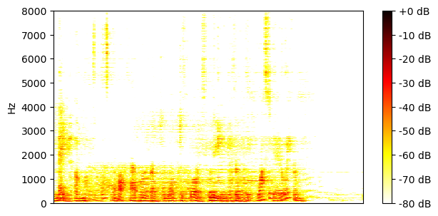
SI-SDR = 0.64 dB |
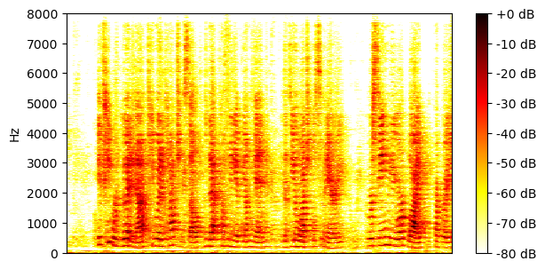
SI-SDR = 19.01 dB |
SI-SDR = -1.37 dB |
| TI 64ms x 4 frames, block size 3.2s, MN3 |
SI-SDR = 2.34 dB |
SI-SDR = 19.45 dB |
SI-SDR = 2.40 dB |
| TV 128ms x 2 frames, BF2 |
SI-SDR = 0.16 dB |
SI-SDR = 19.48 dB |
SI-SDR = -2.60 dB |
| TV 128ms x 2 frames, MN3 |
SI-SDR = -0.08 dB |
SI-SDR = 19.07 dB |
SI-SDR = -1.93 dB |
Example 19
| Mixture |

|
||
|---|---|---|---|
| Ground-truth sources |
SI-SDR = 7.85 dB |

SI-SDR = -10.99 dB |

SI-SDR = -11.67 dB |
| Method | Separated source 0 | Separated source 1 | Separated source 2 |
| TI 64ms x 4 frames, BF2 |
SI-SDR = 17.95 dB |
SI-SDR = 8.66 dB |
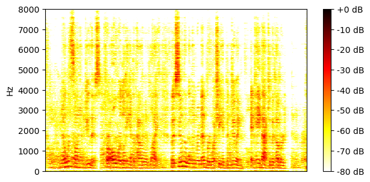
SI-SDR = 7.81 dB |
| TI 64ms x 4 frames, MN3 |
SI-SDR = 17.66 dB |
SI-SDR = 9.38 dB |
SI-SDR = 6.79 dB |
| TI 64ms x 4 frames, block size 3.2s, BF2 |
SI-SDR = 17.05 dB |
SI-SDR = 6.75 dB |
SI-SDR = 4.65 dB |
| TI 64ms x 4 frames, block size 3.2s, MN3 |
SI-SDR = 16.73 dB |

SI-SDR = 7.47 dB |
SI-SDR = 5.08 dB |
| TV 128ms x 2 frames, BF2 |
SI-SDR = 17.68 dB |
SI-SDR = 5.22 dB |
SI-SDR = 3.33 dB |
| TV 128ms x 2 frames, MN3 |
SI-SDR = 16.62 dB |
SI-SDR = 7.29 dB |
SI-SDR = 4.68 dB |
Example 20
| Mixture |

|
||
|---|---|---|---|
| Ground-truth sources |

SI-SDR = 2.36 dB |

SI-SDR = -13.69 dB |

SI-SDR = -3.26 dB |
| Method | Separated source 0 | Separated source 1 | Separated source 2 |
| TI 64ms x 4 frames, BF2 |
SI-SDR = 15.49 dB |
SI-SDR = 6.34 dB |
SI-SDR = 12.87 dB |
| TI 64ms x 4 frames, MN3 |
SI-SDR = 16.21 dB |
SI-SDR = 11.74 dB |
SI-SDR = 14.05 dB |
| TI 64ms x 4 frames, block size 3.2s, BF2 |
SI-SDR = 14.22 dB |
SI-SDR = -11.80 dB |

SI-SDR = 7.51 dB |
| TI 64ms x 4 frames, block size 3.2s, MN3 |

SI-SDR = 14.89 dB |
SI-SDR = -22.10 dB |
SI-SDR = 7.28 dB |
| TV 128ms x 2 frames, BF2 |
SI-SDR = 13.29 dB |

SI-SDR = -31.68 dB |

SI-SDR = 7.29 dB |
| TV 128ms x 2 frames, MN3 |
SI-SDR = 13.72 dB |
SI-SDR = -37.78 dB |
SI-SDR = 7.10 dB |